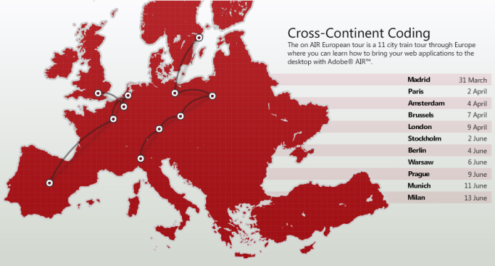

Archive for the ‘programming’ Category.

Have just got back from Berlin where I combined a much needed break with a visit to the European leg of Adobe’s On AIR Tour. For those of you that don’t know, AIR (Adobe Integrated Runtime) is Adobe’s solution to deploying web-type applications on the desktop. It has some pretty big potential for us web developers to take advantage of, allowing desktop applications to be created in nothing less than HTML, CSS Javascript and / or Flash. The rendering engine is Webkit (the same as Safari 3) so allows for standards compliant code and the use of some of the newer w3c standards. The runtime is available across Mac Windows and Linux.
The tour day was very impressive with loads of talks from Adobe’s “Platform Evangelists” Mike Chambers, Kevin Hoyt, Serge Jespers and Daniel Dura amongst others. In common with most of the corporate sponsored conferences I’ve been to, the food was excellent and plentiful and all attendees were given a goody bag, in this case including a copy of the O’Reilly AIR for JavaScript Developers Pocket Guide written by Mike, Kevin and Daniel (for those that missed out you can still get a free copy of the guide in PDF format).
Presentations ranged from an AIR quickstart (Hello World) in both Flex and HTML, right through to how to automatically update and deploy your application, security, Javascript Frameworks and more.
One of the most interesting to me was Ethan Malasky’s on developing secure AIR applications. We were given a good breakdown of AIR’s security model alongside practical explanations of why the decisions had been made. Ethan had a special “unsecured” version of AIR running on stage and proceeded to demonstrate how a code injection could be used to delete files on a users hard disk. Thankfully this version is not in production!
AIR security had been a stumbling block for me from day one when I tried to implement a js framework that uses the eval() method. Adobe has disabled this and some other potentially harmful methods in AIR’s default application context. At first I was pretty annoyed about this but after listening to their reasoning and being presented with the official Adobe work around I’ve come to understand why it’s a good idea. After a bit more investigation I hope to make a later post on using methods such as eval() in an AIR application, but for those of you that can’t wait it relies on using different application sandboxes and using a sandbox bridge.
All in it was a great day out and really opened my eyes to some of the potential in AIR, I’m hoping to do a lot more with this stuff in the coming months so keep an eye out.
I’ve been wanting to set up a home Linux server for some time. I’d gained a bit of a soft spot for UNIX after using Ubuntu on the desktop for a while, and also hacking the command line at work and on my OS X machine. However, none of these have given me the opportunity to really get stuck in with the administration side of Linux, so having a bit of spare hardware knocking about I thought I’d have a go at my building own server.
There are a few things I’m aiming to get out of this experience, in no particular order they are:
- A playground I can use to learn more about Linux.
- A network drive that can act as a central mp3 repository for the house (and an opportunity for me to poach my housemates extensive collection!).
- A mythtv server so I can watch TV on my laptop, and more importantly schedule recordings online!
- A webserver that I can test out new ideas on without the restrictions imposed by my hosted account.
- A personal subversion server for projects outside of work and the excellent Google Code.
I built the server using a spare Abit NF7 motherboard and Athlon 2500 cpu. I brought a new media centre style case that sits quite nicely under the TV, but more importantly looks good and can fit the ATX motherboard. A new heatsink and fan and an antiquated 16mb graphics card to reduce the noise and we’re away!
As far as software goes I was eager to get Debian installed, however I ran into a few problems with the install process. It wouldn’t recognize the Ethernet card on the NF7 board. After a bit of fruitless Googling (try it with a new network card?) and coupled with my complete lack of patience I decided to go for Ubuntu Server Edition. Who said Ubuntu was for those that can’t configure Debian?
So the Ubuntu install went well and I am already hacking away at the TV card with help from the brilliant Linux TV site. I’m hoping to document a few more of my experiences here, and am finding guidance from my new copy of the Linux Administration Handbook
So far everything has been going well, although a couple of things have slightly bothered me. Firstly there seems to be an exorbitant amount of software installed with Ubuntu Server Edition, a lot of which I guess I’ll never use. Kind of makes me wish I’d stuck with the Debian install which I’m sure would have been more minimal. Secondly every time I try to install something new using apt-get install Ubuntu asks me to insert the install CD. This is actually really bad default behavior for a server. I have my server in the lounge so for me it’s not such an issue, but what if you hosted your server off-site? A major pain me thinks. Anyway it can easily be remedied by editing your sources.list
.
So it has come to this, I have started a blog. Having long been a reader and admirer of web blogs, this is something I have been considering for a while now. Blogs have taught me some great stuff over the years, things that have actually helped me get employed. Then there is all the news that I have read first on blogs, and all those otherwise unknown trick bits that have earned me kudos when relayed to my peers. But despite all this, the decision to start my own blog has not been easy.
Continue reading ‘So it has come to this’ »